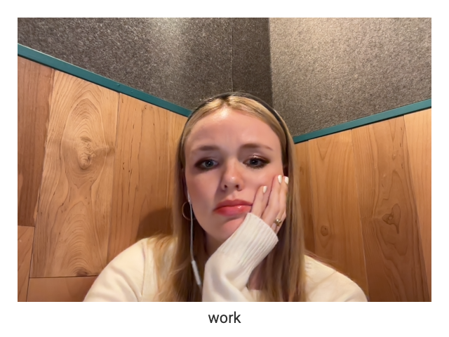
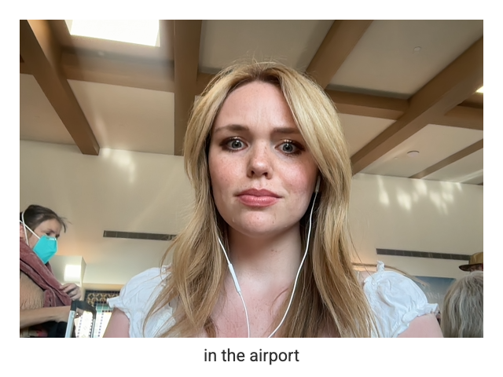
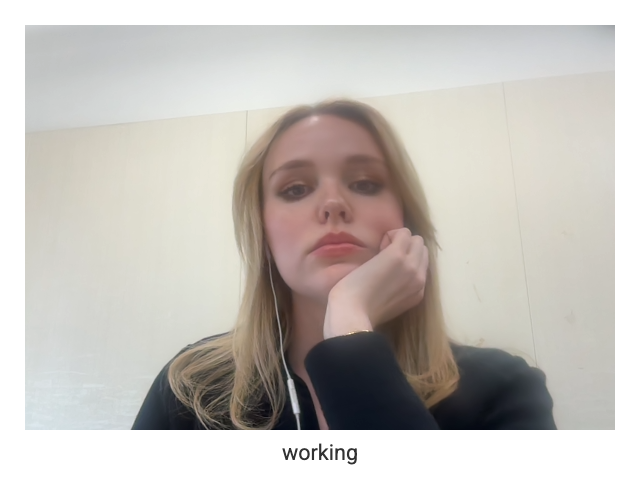

As of late, what I usually use the internet for primarily is work. I feel like prior to my job - marketing for a startup - I was already fairly chronically online, so I cannot solely attribute it to work, however, ever since staring I have seen an increase in my screentime a fair amount.
As for what I use it the most for for work, it would have to be TikTok as the leading source. I'm constantly scrolling trying to find the next trend or get inspiration on how I can market the app.
  In these three screenshots I'm looking over things for work. In the first photo on the left, I'm sitting inside a we work phone booth looking through the stats of videos for creators for the month before hopping on a zoom call. In the middle photo, I'm sitting in the airport looking over a submission someone sent me for a video. In the last video to the right, I'm responding to emails from people reaching out to create content for the company.
Regarding my hopes for the internet in the future, I pray it's more uplifting for women in particular. I remember growing up, there were websites that were hateful and negative, specifically to younger women and it portrayed rhetoric that was really harmful to your self image (similar to the celebrity gossip magazines you’d see at the grocery store). I would want that to be more restricted, especially so less kids grow up feeling insecure about the way they look because some website told them they didn’t look good or that they don’t fit the "beauty standard".